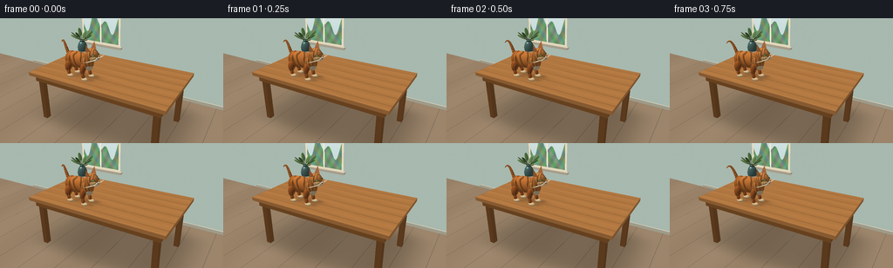
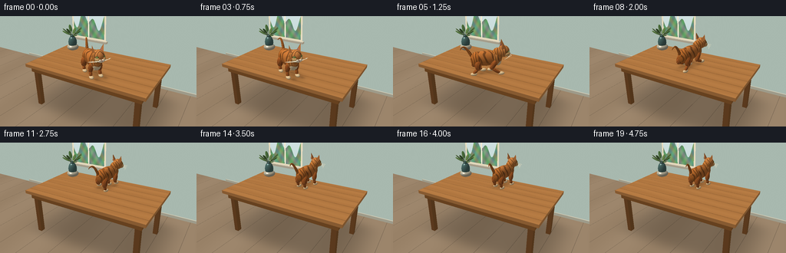
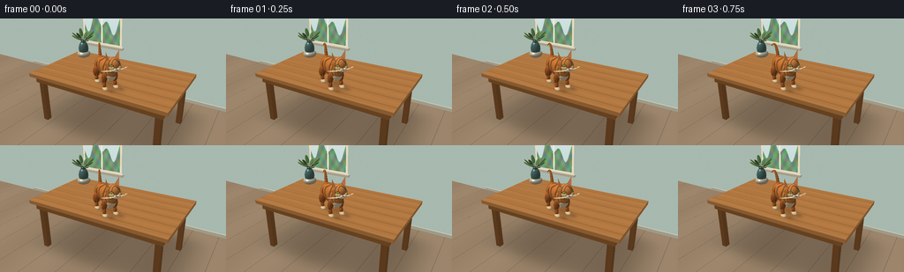
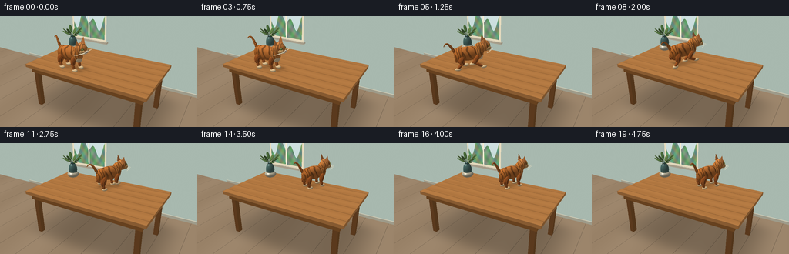

CODING AGENTS AS PIXEL WORLD MODELS
traex/GPT-6.1-Sol · dynamic_spatial_relationship_0013
点击播放 · 原生 RGB 像素
逐轮保存的候选
回放视频、检查图与代码变化。
每份候选均可单独播放。实际图片检查记录在下方工具轨迹中。
候选 01播放与检查图
点击播放 · 原生 RGB 像素


展开代码变化
--- 上一保存版本
+++ 本次保存版本
@@ -0,0 +1,290 @@
+import numpy as np
+from PIL import Image, ImageDraw, ImageFilter
+from pathlib import Path
+import math
+import artifact_io
+
+ROOT=Path(__file__).resolve().parent
+W,H=768,432
+S=3
+rng=np.random.default_rng(23)
+# A small, self-contained analytic renderer. All scene geometry and materials
+# below are constructed from scratch; no external assets are used.
+cam=np.array([4.7,-7.9,6.2])
+target=np.array([0.,0.05,1.8])
+forward=target-cam; forward/=np.linalg.norm(forward)
+right=np.cross(forward,[0,0,1.]); right/=np.linalg.norm(right)
+up=np.cross(right,forward)
+focal=865.
+yy,xx=np.mgrid[0:H,0:W]
+rays=(forward+(xx[...,None]-W/2)/focal*right-(yy[...,None]-H/2)/focal*up).astype(np.float32)
+light=np.array([-.45,-.55,1]); light/=np.linalg.norm(light)
+
+def project(p):
+ p=np.asarray(p); v=p-cam
+ z=v@forward
+ return np.stack([W/2+(v@right)/z*focal,H/2-(v@up)/z*focal],axis=-1)
+
+def plane(img,depth,axis,val,limits,col,texture=None):
+ t=(val-cam[axis])/rays[:,:,axis]
+ q=cam+t[:,:,None]*rays
+ mask=(t>0)&(t<depth)
+ for a,lo,hi in limits: mask&=(q[:,:,a]>=lo)&(q[:,:,a]<=hi)
+ if not mask.any():return
+ c=np.broadcast_to(np.array(col,dtype=float),img.shape).copy()
+ if texture is not None: c=texture(q,c)
+ img[mask]=c[mask];depth[mask]=t[mask]
+
+fur_seeds=rng.random((1200,4))
+
+def ellipsoid(img,depth,c,r,B=None,color=(192,108,46),material='plain', stripe=0):
+ c=np.array(c,dtype=float); r=np.array(r,dtype=float)
+ if B is None:B=np.eye(3)
+ corners=c+np.array([[i,j,k] for i in [-1,1] for j in [-1,1] for k in [-1,1]])@np.diag(r)@B.T
+ pp=project(corners)
+ x0=max(0,int(np.min(pp[:,0]))-3);x1=min(W,int(np.max(pp[:,0]))+4)
+ y0=max(0,int(np.min(pp[:,1]))-3);y1=min(H,int(np.max(pp[:,1]))+4)
+ if x0>=x1 or y0>=y1:return
+ ds=rays[y0:y1,x0:x1]
+ org=(cam-c)@B/r
+ d=ds@B/r
+ a=np.sum(d*d,axis=-1); b=np.sum(d*org,axis=-1); cc=np.sum(org*org)-1
+ disc=b*b-a*cc
+ t=(-b-np.sqrt(np.maximum(disc,0)))/a
+ zbuf=depth[y0:y1,x0:x1]
+ mask=(disc>=0)&(t>0)&(t<zbuf)
+ if not mask.any():return
+ local=org+t[:,:,None]*d
+ norm=(local/r)@B.T
+ norm/=np.linalg.norm(norm,axis=-1,keepdims=True)
+ diffuse=np.maximum(0,norm@light)
+ # Warm key light, cool reflected daylight, and soft rim illumination.
+ shade=.53+.46*diffuse+.06*np.maximum(0,norm[:,:,2])
+ cols=np.broadcast_to(np.array(color,dtype=float),ds.shape).copy()
+ p=c+t[:,:,None]*ds+(cam-c) # world point
+ if material=='fur':
+ # Flowing, irregular tabby stripes and fine individual coat texture.
+ u=local[:,:,0];v=local[:,:,1];z=local[:,:,2]
+ wave=np.sin(u*15.7+z*3.7+np.sin(v*5+u*4)*1.3+stripe)
+ stripe_mask=np.clip((wave-.43)*5,0,1)
+ stripe_mask*=np.clip((z+.95)*.9,0,1)
+ cols*=1-.37*stripe_mask[:,:,None]
+ grain=(np.sin(p[:,:,0]*310+p[:,:,2]*123)*np.sin(p[:,:,1]*227-p[:,:,2]*191))
+ cols*=1+grain[:,:,None]*.043
+ cols+=np.clip(z,0,1)[:,:,None]*np.array([12,10,8])
+ elif material=='cream':
+ grain=np.sin(p[:,:,0]*350+p[:,:,2]*200)*np.sin(p[:,:,1]*280)
+ cols*=1+grain[:,:,None]*.025
+ elif material=='pot':
+ cols+=np.sin(p[:,:,2]*85)[:,:,None]*2
+ cols*=shade[:,:,None]
+ # slight specular makes eyes and glazed ceramics read as glossy
+ if material in ['eye','pot']:
+ view=-ds/np.linalg.norm(ds,axis=-1,keepdims=True)
+ half=view+light;half/=np.linalg.norm(half,axis=-1,keepdims=True)
+ spec=np.maximum(0,np.sum(norm*half,axis=-1))**(45 if material=='eye' else 65)
+ cols+=spec[:,:,None]*130
+ sub=img[y0:y1,x0:x1];sub[mask]=cols[mask]
+ zbuf[mask]=t[mask]
+
+def capsule(img,depth,a,b,r1,r2=None,color=(185,100,43),mat='fur',stripe=0):
+ a=np.array(a);b=np.array(b); mid=(a+b)/2
+ v=b-a;length=np.linalg.norm(v)
+ z=v/max(length,1e-5); x=np.cross(z,[0,1,0])
+ if np.linalg.norm(x)<.01:x=np.cross(z,[1,0,0])
+ x/=np.linalg.norm(x);y=np.cross(z,x)
+ B=np.stack([x,y,z],axis=1)
+ ellipsoid(img,depth,mid,[r1,r1,length/2+r1*.6],B,color,mat,stripe)
+
+def triangle(img,dep,verts,col):
+ v=np.array(verts); p=project(v)
+ x0=max(0,int(p[:,0].min()));x1=min(W,int(p[:,0].max())+2)
+ y0=max(0,int(p[:,1].min()));y1=min(H,int(p[:,1].max())+2)
+ if x1<=x0 or y1<=y0:return
+ X,Y=np.meshgrid(np.arange(x0,x1)+.5,np.arange(y0,y1)+.5)
+ den=(p[1,1]-p[2,1])*(p[0,0]-p[2,0])+(p[2,0]-p[1,0])*(p[0,1]-p[2,1])
+ if abs(den)<1e-8:return
+ a=((p[1,1]-p[2,1])*(X-p[2,0])+(p[2,0]-p[1,0])*(Y-p[2,1]))/den
+ b=((p[2,1]-p[0,1])*(X-p[2,0])+(p[0,0]-p[2,0])*(Y-p[2,1]))/den
+ c=1-a-b
+ ds=rays[y0:y1,x0:x1];n=np.cross(v[1]-v[0],v[2]-v[0]); n/=np.linalg.norm(n)
+ t=((v[0]-cam)@n)/(ds@n)
+ mask=(a>=0)&(b>=0)&(c>=0)&(t<dep[y0:y1,x0:x1])&(t>0)
+ bright=.55+.45*abs(n@light)
+ img[y0:y1,x0:x1][mask]=np.array(col)*bright
+ dep[y0:y1,x0:x1][mask]=t[mask]
+
+def box(img,depth,lo,hi,color):
+ for axis in range(3):
+ others=[i for i in range(3) if i!=axis]
+ for val in [lo[axis],hi[axis]]:
+ shade=[.69,.75,1][axis]
+ plane(img,depth,axis,val,[(a,lo[a],hi[a]) for a in others],np.array(color)*shade,wood if axis==2 else None)
+
+def wood(p,c):
+ x,y,z=p[:,:,0],p[:,:,1],p[:,:,2]
+ grain=np.sin(y*115+2.2*np.sin(x*1.9)+.8*np.sin(x*8+y*3))
+ grain+=.4*np.sin(y*249+np.sin(x*5)*3)
+ large=np.sin(y*11+np.sin(x*.9)*1.2)
+ c+=((grain*2.6+large*4)[:,:,None])*np.array([1,.80,.56])
+ seams=np.abs((y+1.6)%(.54)-.27)<.009
+ c[seams]*=.74
+ # Small wood knots, elongated with the grain.
+ for kx,ky in [(-1.8,-.3),(1.6,.5),(.25,-1.0)]:
+ rr=np.sqrt(((x-kx)/.35)**2+((y-ky)/.055)**2)
+ knot=np.exp(-rr*rr*.4)*(np.sin(rr*12)*3-5)
+ c+=knot[:,:,None]*np.array([1,.8,.6])
+ return c
+
+def walltex(p,c):
+ x,z=p[:,:,0],p[:,:,2]
+ c+=np.sin(x*120+z*101)[:,:,None]*.7
+ # Inset window at the left of the scene.
+ outer=(x>-3.75)&(x<-1.35)&(z>2.12)&(z<5.5)
+ c[outer]=[230,219,190]
+ inside=(x>-3.64)&(x<-1.46)&(z>2.23)&(z<5.39)
+ sky=np.stack([179+z*8,207+z*5,203+z*6],axis=-1)
+ c[inside]=sky[inside]
+ trees=(np.sin(x*4)+np.sin(x*8+.3))*.28+3.25
+ leaves=inside&(z<trees)
+ c[leaves]=np.stack([110+17*np.sin(x*11+z*9),148+16*np.sin(x*12-z*7),113+15*np.sin(x*7+z*8)],axis=-1)[leaves]
+ bars=inside&((np.abs(x+2.55)<.045)|(np.abs(z-3.8)<.06))
+ c[bars]=[244,235,210]
+ return c
+
+img=np.zeros((H,W,3),np.float32);img[:]=[207,216,205]
+dep=np.full((H,W),np.inf,np.float32)
+plane(img,dep,1,3.2,[(0,-20,20),(2,0,12)],[168,185,175],walltex)
+def floor(p,c):
+ v=np.sin(p[:,:,0]*2+p[:,:,1]*.3)*3
+ c+=v[:,:,None]
+ line=(p[:,:,0]+7)%1.2<.016;c[line]*=.75
+ # table casts a broad soft shadow onto the wooden floor
+ q=np.exp(-((p[:,:,0]-.1)/3.2)**6-((p[:,:,1]-.4)/2)**6)
+ c*=1-q[:,:,None]*.23
+ return c
+plane(img,dep,2,0,[(0,-20,20),(1,-20,20)],[155,132,106],floor)
+# Wall skirting and window ledge.
+box(img,dep,[-8,3.13,.02],[8,3.22,.18],[211,207,185])
+box(img,dep,[-3.84,2.97,2.05],[-1.22,3.30,2.17],[220,210,184])
+# Four solid tapered-looking oak legs, apron, and generous tabletop.
+for x in [-2.5,2.5]:
+ for y in [-1.3,1.3]:box(img,dep,[x-.105,y-.11,0],[x+.105,y+.11,2.10],[120,77,39])
+box(img,dep,[-2.68,-1.48,1.78],[2.68,1.48,2.04],[137,87,42])
+box(img,dep,[-2.86,-1.64,2.04],[2.86,1.64,2.18],[179,121,66])
+# A restrained still life on the far left, leaving the cat's path unobstructed.
+ellipsoid(img,dep,[-2.12,.99,2.35],[.30,.30,.17],color=(188,180,156),material='pot')
+ellipsoid(img,dep,[-2.12,.99,2.60],[.22,.22,.34],color=(77,110,105),material='pot')
+ellipsoid(img,dep,[-2.12,.99,2.91],[.105,.105,.10],color=(57,83,79),material='pot')
+for j in range(9):
+ ang=j*2.399;end=np.array([-2.12+np.cos(ang)*.36,.99+np.sin(ang)*.32,3.16+.12*np.sin(j)])
+ a=np.array([-2.12,.99,2.93]);capsule(img,dep,a,end,.012,color=(72,95,50),mat='plain')
+ vec=end-a; vec/=np.linalg.norm(vec)
+ tx=np.cross(vec,[0,0,1]);tx/=np.linalg.norm(tx);ty=np.cross(vec,tx)
+ ellipsoid(img,dep,end,[.08,.027,.22],np.stack([tx,ty,vec],axis=1),color=(78+4*j,116+3*j,63+2*j))
+base=img.copy();base_depth=dep.copy()
+
+# Cat local x is from rump to nose, local y across the body, z up.
+def cat(frame):
+ t=frame/4
+ if t<.75:
+ progress=0.;angle=-.08+.10*t/.75; run=0
+ elif t<3.5:
+ a=(t-.75)/2.75
+ progress=a*a*(3-2*a);angle=.02+1.05*min(1,(t-.75)/.65);run=np.sin(np.pi*a)**.35
+ else:
+ progress=1;angle=1.07;run=0
+ root=np.array([-.78+1.23*progress,-.93+1.92*progress,2.18])
+ B=np.array([[np.cos(angle),-np.sin(angle),0],[np.sin(angle),np.cos(angle),0],[0,0,1]])
+ def P(v):return root+B@np.array(v)
+ phase=(t-.75)*2*np.pi*2.5
+ bounce=.047*run*np.cos(phase*2)
+ im=base.copy();dz=base_depth.copy()
+ # Soft projected moving contact shadows on the table, not painted on the cat.
+ ts=(2.18-cam[2])/rays[:,:,2]
+ q=cam+ts[:,:,None]*rays
+ ontable=(np.abs(dz-ts)<.008)
+ sha=np.zeros((H,W),np.float32)
+ for px,py,sx,sy,op in [(-.05,0,.63,.32,.18),(-.4,-.19,.18,.13,.13),(.35,-.19,.18,.13,.13),(-.4,.19,.18,.13,.13),(.35,.19,.18,.13,.13)]:
+ center=P([px+.13,py+.15,0]);delta=q-center
+ d=delta@B
+ sha+=op*np.exp(-((d[:,:,0]/sx)**2+(d[:,:,1]/sy)**2)*1.5)
+ im[ontable]*=(1-np.clip(sha[ontable],0,.4))[:,None]
+ # Long articulated tail, tapered and curling at the tip.
+ tail=[]
+ for j in range(18):
+ s=j/17
+ tail.append(P([-.54-.70*s+.17*s*s,.045+.13*np.sin(t*2+s*2)*s, .62+bounce+.65*np.sin(s*np.pi*.66)-.10*run*s]))
+ for j in range(17):
+ capsule(im,dz,tail[j],tail[j+1],.075*(1-j/20),color=(190,109,46),stripe=j*.9)
+ # Four running limbs, alternate diagonal paws stay on the tabletop.
+ for side in [1,-1]:
+ for front in [False,True]:
+ hipx=.31 if front else -.40
+ ph=phase+(0 if (front==(side<0)) else np.pi)
+ swing=np.sin(ph)*run
+ lift=max(0,np.cos(ph))*run*.19
+ footx=hipx+.25*swing
+ ztop=.64+bounce if front else .62+bounce
+ hip=[hipx,side*.17,ztop]
+ knee=[hipx-.07-.11*swing,side*.20,.30+lift*.36]
+ foot=[footx,side*.205,.07+lift]
+ capsule(im,dz,P(hip),P(knee),.111 if front else .14,stripe=1.6)
+ capsule(im,dz,P(knee),P(foot),.066,stripe=2.3)
+ ellipsoid(im,dz,P([footx+.035,side*.205,.065+lift]),[.135,.087,.065],B,(230,197,147),'cream')
+ ellipsoid(im,dz,P([-.07,0,.70+bounce]),[.62,.25,.31],B,(195,114,50),'fur')
+ ellipsoid(im,dz,P([-.43,0,.66+bounce]),[.25,.255,.32],B,(192,109,44),'fur',1)
+ ellipsoid(im,dz,P([.34,0,.70+bounce]),[.25,.235,.31],B,(203,125,59),'fur',2)
+ ellipsoid(im,dz,P([.43,-.01,.61+bounce]),[.14,.18,.23],B,(232,204,161),'cream')
+ # The neck and head subtly reach forward during the run.
+ hx=.57+.09*run;hz=1.02+bounce-.05*run
+ ellipsoid(im,dz,P([.41,0,.86+bounce]),[.23,.19,.27],B,(201,120,52),'fur')
+ ellipsoid(im,dz,P([hx,0,hz]),[.25,.217,.24],B,(210,131,65),'fur',2.2)
+ # Proper pointed ears with warm pink interiors and shaded outer faces.
+ for side in [-1,1]:
+ v=[P([hx-.14,side*.105,hz+.15]),P([hx+.085,side*.165,hz+.15]),P([hx-.055,side*.24,hz+.43]),P([hx-.095,side*.218,hz+.14])]
+ for inds in [[0,1,2],[0,2,3],[1,3,2]]:triangle(im,dz,[v[i] for i in inds],[202,125,66])
+ triangle(im,dz,[P([hx-.11,side*.123,hz+.19]),P([hx+.04,side*.169,hz+.18]),P([hx-.054,side*.219,hz+.36])],[190,119,104])
+ # Cheeks and ivory split muzzle.
+ for side in [-1,1]:
+ ellipsoid(im,dz,P([hx+.133,side*.115,hz-.085]),[.127,.103,.105],B,(225,175,111),'fur',3)
+ ellipsoid(im,dz,P([hx+.222,side*.063,hz-.109]),[.069,.073,.059],B,(244,226,193),'cream')
+ ellipsoid(im,dz,P([hx+.205,0,hz-.157]),[.065,.098,.028],B,(234,215,180),'cream')
+ # Eye sockets / yellow green irises / slit pupils on both sides of face.
+ for side in [-1,1]:
+ # Eyes lie on the forward-facing diagonal surface of the head.
+ pos=np.array([hx+.176,side*.143,hz+.026])
+ n=np.array([.76,side*.65,.06]);n/=np.linalg.norm(n)
+ e1=np.cross([0,0,1],n);e1/=np.linalg.norm(e1);e2=np.cross(n,e1)
+ EB=B@np.stack([e1,e2,n],axis=1)
+ ellipsoid(im,dz,P(pos),[.069,.043,.022],EB,(68,51,32))
+ ellipsoid(im,dz,P(pos+n*.017),[.052,.035,.012],EB,(164,184,85),'eye')
+ ellipsoid(im,dz,P(pos+n*.029),[.008,.031,.007],EB,(18,27,18),'eye')
+ ellipsoid(im,dz,P(pos+n*.034+np.array([-.005,0,.013])),[.009,.009,.006],EB,(255,252,234),'eye')
+ triangle(im,dz,[P([hx+.29,-.041,hz-.082]),P([hx+.29,.041,hz-.082]),P([hx+.304,0,hz-.116])],[155,79,67])
+ # Fine whiskers and mouth drawn in camera space, with depth-tested samples.
+ def stroke(points,color,width):
+ for a,b in zip(points[:-1],points[1:]):
+ for u in np.linspace(0,1,max(4,int(np.linalg.norm(project(b)-project(a))*1.8))):
+ p=a*(1-u)+b*u; xy=project(p);x,y=np.round(xy).astype(int)
+ if 0<=x<W and 0<=y<H:
+ tt=np.dot(p-cam,forward)/np.dot(rays[y,x],forward)
+ if tt<dz[y,x]+.018:
+ rad=width//2
+ im[max(0,y-rad):y+rad+1,max(0,x-rad):x+rad+1]=color
+ stroke([P([hx+.305,0,hz-.116]),P([hx+.28,0,hz-.143])],[101,70,49],1)
+ for side in [-1,1]:
+ for j in range(4):
+ a=P([hx+.258,side*.078,hz-.095-j*.012]);b=P([hx+.28-j*.06,side*(.31+j*.023),hz-.075-j*.028]);c=P([hx+.23-j*.08,side*(.39+j*.016),hz-.068-j*.036])
+ stroke([a,b,c],[226,218,191],1)
+ return im
+
+frames=[]
+for i in range(20):
+ im=cat(i)
+ # A mild photographic curve and supersampling remove analytic edges.
+ im=np.clip(im,0,255).astype(np.uint8)
+ image=Image.fromarray(im).resize((256,144),Image.Resampling.LANCZOS)
+ frames.append(np.array(image))
+artifact_io.save(np.array(frames,dtype=np.uint8),ROOT)
+print('Saved 20 RGB frames.')
候选 02播放与检查图
点击播放 · 原生 RGB 像素


展开代码变化
--- 上一保存版本
+++ 本次保存版本
@@ -188,13 +188,13 @@
def cat(frame):
t=frame/4
if t<.75:
- progress=0.;angle=-.08+.10*t/.75; run=0
+ progress=0.;angle=-.60+.04*t/.75; run=0
elif t<3.5:
a=(t-.75)/2.75
- progress=a*a*(3-2*a);angle=.02+1.05*min(1,(t-.75)/.65);run=np.sin(np.pi*a)**.35
+ progress=a*a*(3-2*a);angle=-.56+1.91*min(1,(t-.75)/.80);run=np.sin(np.pi*a)**.35
else:
- progress=1;angle=1.07;run=0
- root=np.array([-.78+1.23*progress,-.93+1.92*progress,2.18])
+ progress=1;angle=1.35;run=0
+ root=np.array([.35-.12*progress,-1.00+1.84*progress,2.18])
B=np.array([[np.cos(angle),-np.sin(angle),0],[np.sin(angle),np.cos(angle),0],[0,0,1]])
def P(v):return root+B@np.array(v)
phase=(t-.75)*2*np.pi*2.5
可观测工具轨迹
实际执行的命令与返回图片。
命令 1exit 0
/bin/bash -lc "ls -la && cat prompt.txt && printf '\\n---RULES---\\n' && cat GENERATION_RULES.md && printf '\\n---SPEC---\\n' && cat task_spec.json"
命令 2exit 0
/bin/bash -lc "cat artifact_io.py && python - <<'PY'
import numpy,PIL
print('numpy / PIL available')
PY"命令 3exit 0
/bin/bash -lc "cat > generate.py <<'PY'
import numpy as np
from PIL import Image, ImageDraw, ImageFilter
from pathlib import Path
import math
import artifact_io
ROOT=Path(__file__).resolve().parent
W,H=768,432
S=3
rng=np.random.default_rng(23)
# A small, self-contained analytic renderer. All scene geometry and materials
# below are constructed from scratch; no external assets are used.
cam=np.array([4.7,-7.9,6.2])
target=np.array([0.,0.05,1.8])
forward=target-cam; forward/=np.linalg.norm(forward)
right=np.cross(forward,[0,0,1.]); right/=np.linalg.norm(right)
up=np.cross(right,forward)
focal=865.
yy,xx=np.mgrid[0:H,0:W]
rays=(forward+(xx[...,None]-W/2)/focal*right-(yy[...,None]-H/2)/focal*up).astype(np.float32)
light=np.array([-.45,-.55,1]); light/=np.linalg.norm(light)
def project(p):
p=np.asarray(p); v=p-cam
z=v@forward
return np.stack([W/2+(v@right)/z*focal,H/2-(v@up)/z*focal],axis=-1)
def plane(img,depth,axis,val,limits,col,texture=None):
t=(val-cam[axis])/rays[:,:,axis]
q=cam+t[:,:,None]*rays
mask=(t>0)&(t<depth)
for a,lo,hi in limits: mask&=(q[:,:,a]>=lo)&(q[:,:,a]<=hi)
if not mask.any():return
c=np.broadcast_to(np.array(col,dtype=float),img.shape).copy()
if texture is not None: c=texture(q,c)
img[mask]=c[mask];depth[mask]=t[mask]
fur_seeds=rng.random((1200,4))
def ellipsoid(img,depth,c,r,B=None,color=(192,108,46),material='plain', stripe=0):
c=np.array(c,dtype=float); r=np.array(r,dtype=float)
if B is None:B=np.eye(3)
corners=c+np.array([[i,j,k] for i in [-1,1] for j in [-1,1] for k in [-1,1]])@np.diag(r)@B.T
pp=project(corners)
x0=max(0,int(np.min(pp[:,0]))-3);x1=min(W,int(np.max(pp[:,0]))+4)
y0=max(0,int(np.min(pp[:,1]))-3);y1=min(H,int(np.max(pp[:,1]))+4)
if x0>=x1 or y0>=y1:return
ds=rays[y0:y1,x0:x1]
org=(cam-c)@B/r
d=ds@B/r
a=np.sum(d*d,axis=-1); b=np.sum(d*org,axis=-1); cc=np.sum(org*org)-1
disc=b*b-a*cc
t=(-b-np.sqrt(np.maximum(disc,0)))/a
zbuf=depth[y0:y1,x0:x1]
mask=(disc>=0)&(t>0)&(t<zbuf)
if not mask.any():return
local=org+t[:,:,None]*d
norm=(local/r)@B.T
norm/=np.linalg.norm(norm,axis=-1,keepdims=True)
diffuse=np.maximum(0,norm@light)
# Warm key light, cool reflected daylight, and soft rim illumination.
shade=.53+.46*diffuse+.06*np.maximum(0,norm[:,:,2])
cols=np.broadcast_to(np.array(color,dtype=float),ds.shape).copy()
p=c+t[:,:,None]*ds+(cam-c) # world point
if material=='fur':
# Flowing, irregular tabby stripes and fine individual coat texture.
u=local[:,:,0];v=local[:,:,1];z=local[:,:,2]
wave=np.sin(u*15.7+z*3.7+np.sin(v*5+u*4)*1.3+stripe)
stripe_mask=np.clip((wave-.43)*5,0,1)
stripe_mask*=np.clip((z+.95)*.9,0,1)
cols*=1-.37*stripe_mask[:,:,None]
grain=(np.sin(p[:,:,0]*310+p[:,:,2]*123)*np.sin(p[:,:,1]*227-p[:,:,2]*191))
cols*=1+grain[:,:,None]*.043
cols+=np.clip(z,0,1)[:,:,None]*np.array([12,10,8])
elif material=='cream':
grain=np.sin(p[:,:,0]*350+p[:,:,2]*200)*np.sin(p[:,:,1]*280)
cols*=1+grain[:,:,None]*.025
elif material=='pot':
cols+=np.sin(p[:,:,2]*85)[:,:,None]*2
cols*=shade[:,:,None]
# slight specular makes eyes and glazed ceramics read as glossy
if material in ['eye','pot']:
view=-ds/np.linalg.norm(ds,axis=-1,keepdims=True)
half=view+light;half/=np.linalg.norm(half,axis=-1,keepdims=True)
spec=np.maximum(0,np.sum(norm*half,axis=-1))**(45 if material=='eye' else 65)
cols+=spec[:,:,None]*130
sub=img[y0:y1,x0:x1];sub[mask]=cols[mask]
zbuf[mask]=t[mask]
def capsule(img,depth,a,b,r1,r2=None,color=(185,100,43),mat='fur',stripe=0):
a=np.array(a);b=np.array(b); mid=(a+b)/2
v=b-a;length=np.linalg.norm(v)
z=v/max(length,1e-5); x=np.cross(z,[0,1,0])
if np.linalg.norm(x)<.01:x=np.cross(z,[1,0,0])
x/=np.linalg.norm(x);y=np.cross(z,x)
B=np.stack([x,y,z],axis=1)
ellipsoid(img,depth,mid,[r1,r1,length/2+r1*.6],B,color,mat,stripe)
def triangle(img,dep,verts,col):
v=np.array(verts); p=project(v)
x0=max(0,int(p[:,0].min()));x1=min(W,int(p[:,0].max())+2)
y0=max(0,int(p[:,1].min()));y1=min(H,int(p[:,1].max())+2)
if x1<=x0 or y1<=y0:return
X,Y=np.meshgrid(np.arange(x0,x1)+.5,np.arange(y0,y1)+.5)
den=(p[1,1]-p[2,1])*(p[0,0]-p[2,0])+(p[2,0]-p[1,0])*(p[0,1]-p[2,1])
if abs(den)<1e-8:return
a=((p[1,1]-p[2,1])*(X-p[2,0])+(p[2,0]-p[1,0])*(Y-p[2,1]))/den
b=((p[2,1]-p[0,1])*(X-p[2,0])+(p[0,0]-p[2,0])*(Y-p[2,1]))/den
c=1-a-b
ds=rays[y0:y1,x0:x1];n=np.cross(v[1]-v[0],v[2]-v[0]); n/=np.linalg.norm(n)
t=((v[0]-cam)@n)/(ds@n)
mask=(a>=0)&(b>=0)&(c>=0)&(t<dep[y0:y1,x0:x1])&(t>0)
bright=.55+.45*abs(n@light)
img[y0:y1,x0:x1][mask]=np.array(col)*bright
dep[y0:y1,x0:x1][mask]=t[mask]
def box(img,depth,lo,hi,color):
for axis in range(3):
others=[i for i in range(3) if i"'!=axis]
for val in [lo[axis],hi[axis]]:
shade=[.69,.75,1][axis]
plane(img,depth,axis,val,[(a,lo[a],hi[a]) for a in others],np.array(color)*shade,wood if axis==2 else None)
def wood(p,c):
x,y,z=p[:,:,0],p[:,:,1],p[:,:,2]
grain=np.sin(y*115+2.2*np.sin(x*1.9)+.8*np.sin(x*8+y*3))
grain+=.4*np.sin(y*249+np.sin(x*5)*3)
large=np.sin(y*11+np.sin(x*.9)*1.2)
c+=((grain*2.6+large*4)[:,:,None])*np.array([1,.80,.56])
seams=np.abs((y+1.6)%(.54)-.27)<.009
c[seams]*=.74
# Small wood knots, elongated with the grain.
for kx,ky in [(-1.8,-.3),(1.6,.5),(.25,-1.0)]:
rr=np.sqrt(((x-kx)/.35)**2+((y-ky)/.055)**2)
knot=np.exp(-rr*rr*.4)*(np.sin(rr*12)*3-5)
c+=knot[:,:,None]*np.array([1,.8,.6])
return c
def walltex(p,c):
x,z=p[:,:,0],p[:,:,2]
c+=np.sin(x*120+z*101)[:,:,None]*.7
# Inset window at the left of the scene.
outer=(x>-3.75)&(x<-1.35)&(z>2.12)&(z<5.5)
c[outer]=[230,219,190]
inside=(x>-3.64)&(x<-1.46)&(z>2.23)&(z<5.39)
sky=np.stack([179+z*8,207+z*5,203+z*6],axis=-1)
c[inside]=sky[inside]
trees=(np.sin(x*4)+np.sin(x*8+.3))*.28+3.25
leaves=inside&(z<trees)
c[leaves]=np.stack([110+17*np.sin(x*11+z*9),148+16*np.sin(x*12-z*7),113+15*np.sin(x*7+z*8)],axis=-1)[leaves]
bars=inside&((np.abs(x+2.55)<.045)|(np.abs(z-3.8)<.06))
c[bars]=[244,235,210]
return c
img=np.zeros((H,W,3),np.float32);img[:]=[207,216,205]
dep=np.full((H,W),np.inf,np.float32)
plane(img,dep,1,3.2,[(0,-20,20),(2,0,12)],[168,185,175],walltex)
def floor(p,c):
v=np.sin(p[:,:,0]*2+p[:,:,1]*.3)*3
c+=v[:,:,None]
line=(p[:,:,0]+7)%1.2<.016;c[line]*=.75
# table casts a broad soft shadow onto the wooden floor
q=np.exp(-((p[:,:,0]-.1)/3.2)**6-((p[:,:,1]-.4)/2)**6)
c*=1-q[:,:,None]*.23
return c
plane(img,dep,2,0,[(0,-20,20),(1,-20,20)],[155,132,106],floor)
# Wall skirting and window ledge.
box(img,dep,[-8,3.13,.02],[8,3.22,.18],[211,207,185])
box(img,dep,[-3.84,2.97,2.05],[-1.22,3.30,2.17],[220,210,184])
# Four solid tapered-looking oak legs, apron, and generous tabletop.
for x in [-2.5,2.5]:
for y in [-1.3,1.3]:box(img,dep,[x-.105,y-.11,0],[x+.105,y+.11,2.10],[120,77,39])
box(img,dep,[-2.68,-1.48,1.78],[2.68,1.48,2.04],[137,87,42])
box(img,dep,[-2.86,-1.64,2.04],[2.86,1.64,2.18],[179,121,66])
# A restrained still life on the far left, leaving the cat'"'s path unobstructed.
ellipsoid(img,dep,[-2.12,.99,2.35],[.30,.30,.17],color=(188,180,156),material='pot')
ellipsoid(img,dep,[-2.12,.99,2.60],[.22,.22,.34],color=(77,110,105),material='pot')
ellipsoid(img,dep,[-2.12,.99,2.91],[.105,.105,.10],color=(57,83,79),material='pot')
for j in range(9):
ang=j*2.399;end=np.array([-2.12+np.cos(ang)*.36,.99+np.sin(ang)*.32,3.16+.12*np.sin(j)])
a=np.array([-2.12,.99,2.93]);capsule(img,dep,a,end,.012,color=(72,95,50),mat='plain')
vec=end-a; vec/=np.linalg.norm(vec)
tx=np.cross(vec,[0,0,1]);tx/=np.linalg.norm(tx);ty=np.cross(vec,tx)
ellipsoid(img,dep,end,[.08,.027,.22],np.stack([tx,ty,vec],axis=1),color=(78+4*j,116+3*j,63+2*j))
base=img.copy();base_depth=dep.copy()
# Cat local x is from rump to nose, local y across the body, z up.
def cat(frame):
t=frame/4
if t<.75:
progress=0.;angle=-.08+.10*t/.75; run=0
elif t<3.5:
a=(t-.75)/2.75
progress=a*a*(3-2*a);angle=.02+1.05*min(1,(t-.75)/.65);run=np.sin(np.pi*a)**.35
else:
progress=1;angle=1.07;run=0
root=np.array([-.78+1.23*progress,-.93+1.92*progress,2.18])
B=np.array([[np.cos(angle),-np.sin(angle),0],[np.sin(angle),np.cos(angle),0],[0,0,1]])
def P(v):return root+B@np.array(v)
phase=(t-.75)*2*np.pi*2.5
bounce=.047*run*np.cos(phase*2)
im=base.copy();dz=base_depth.copy()
# Soft projected moving contact shadows on the table, not painted on the cat.
ts=(2.18-cam[2])/rays[:,:,2]
q=cam+ts[:,:,None]*rays
ontable=(np.abs(dz-ts)<.008)
sha=np.zeros((H,W),np.float32)
for px,py,sx,sy,op in [(-.05,0,.63,.32,.18),(-.4,-.19,.18,.13,.13),(.35,-.19,.18,.13,.13),(-.4,.19,.18,.13,.13),(.35,.19,.18,.13,.13)]:
center=P([px+.13,py+.15,0]);delta=q-center
d=delta@B
sha+=op*np.exp(-((d[:,:,0]/sx)**2+(d[:,:,1]/sy)**2)*1.5)
im[ontable]*=(1-np.clip(sha[ontable],0,.4))[:,None]
# Long articulated tail, tapered and curling at the tip.
tail=[]
for j in range(18):
s=j/17
tail.append(P([-.54-.70*s+.17*s*s,.045+.13*np.sin(t*2+s*2)*s, .62+bounce+.65*np.sin(s*np.pi*.66)-.10*run*s]))
for j in range(17):
capsule(im,dz,tail[j],tail[j+1],.075*(1-j/20),color=(190,109,46),stripe=j*.9)
# Four running limbs, alternate diagonal paws stay on the tabletop.
for side in [1,-1]:
for front in [False,True]:
hipx=.31 if front else -.40
ph=phase+(0 if (front==(side<0)) else np.pi)
swing=np.sin(ph)*run
lift=max(0,np.cos(ph))*run*.19
footx=hipx+.25*swing
ztop=.64+bounce if front else .62+bounce
hip=[hipx,side*.17,ztop]
knee=[hipx-.07-.11*swing,side*.20,.30+lift*.36]
foot=[footx,side*.205,.07+lift]
capsule(im,dz,P(hip),P(knee),.111 if front else .14,stripe=1.6)
capsule(im,dz,P(knee),P(foot),.066,stripe=2.3)
ellipsoid(im,dz,P([footx+.035,side*.205,.065+lift]),[.135,.087,.065],B,(230,197,147),'cream')
ellipsoid(im,dz,P([-.07,0,.70+bounce]),[.62,.25,.31],B,(195,114,50),'fur')
ellipsoid(im,dz,P([-.43,0,.66+bounce]),[.25,.255,.32],B,(192,109,44),'fur',1)
ellipsoid(im,dz,P([.34,0,.70+bounce]),[.25,.235,.31],B,(203,125,59),'fur',2)
ellipsoid(im,dz,P([.43,-.01,.61+bounce]),[.14,.18,.23],B,(232,204,161),'cream')
# The neck and head subtly reach forward during the run.
hx=.57+.09*run;hz=1.02+bounce-.05*run
ellipsoid(im,dz,P([.41,0,.86+bounce]),[.23,.19,.27],B,(201,120,52),'fur')
ellipsoid(im,dz,P([hx,0,hz]),[.25,.217,.24],B,(210,131,65),'fur',2.2)
# Proper pointed ears with warm pink interiors and shaded outer faces.
for side in [-1,1]:
v=[P([hx-.14,side*.105,hz+.15]),P([hx+.085,side*.165,hz+.15]),P([hx-.055,side*.24,hz+.43]),P([hx-.095,side*.218,hz+.14])]
for inds in [[0,1,2],[0,2,3],[1,3,2]]:triangle(im,dz,[v[i] for i in inds],[202,125,66])
triangle(im,dz,[P([hx-.11,side*.123,hz+.19]),P([hx+.04,side*.169,hz+.18]),P([hx-.054,side*.219,hz+.36])],[190,119,104])
# Cheeks and ivory split muzzle.
for side in [-1,1]:
ellipsoid(im,dz,P([hx+.133,side*.115,hz-.085]),[.127,.103,.105],B,(225,175,111),'fur',3)
ellipsoid(im,dz,P([hx+.222,side*.063,hz-.109]),[.069,.073,.059],B,(244,226,193),'cream')
ellipsoid(im,dz,P([hx+.205,0,hz-.157]),[.065,.098,.028],B,(234,215,180),'cream')
# Eye sockets / yellow green irises / slit pupils on both sides of face.
for side in [-1,1]:
# Eyes lie on the forward-facing diagonal surface of the head.
pos=np.array([hx+.176,side*.143,hz+.026])
n=np.array([.76,side*.65,.06]);n/=np.linalg.norm(n)
e1=np.cross([0,0,1],n);e1/=np.linalg.norm(e1);e2=np.cross(n,e1)
EB=B@np.stack([e1,e2,n],axis=1)
ellipsoid(im,dz,P(pos),[.069,.043,.022],EB,(68,51,32))
ellipsoid(im,dz,P(pos+n*.017),[.052,.035,.012],EB,(164,184,85),'eye')
ellipsoid(im,dz,P(pos+n*.029),[.008,.031,.007],EB,(18,27,18),'eye')
ellipsoid(im,dz,P(pos+n*.034+np.array([-.005,0,.013])),[.009,.009,.006],EB,(255,252,234),'eye')
triangle(im,dz,[P([hx+.29,-.041,hz-.082]),P([hx+.29,.041,hz-.082]),P([hx+.304,0,hz-.116])],[155,79,67])
# Fine whiskers and mouth drawn in camera space, with depth-tested samples.
def stroke(points,color,width):
for a,b in zip(points[:-1],points[1:]):
for u in np.linspace(0,1,max(4,int(np.linalg.norm(project(b)-project(a))*1.8))):
p=a*(1-u)+b*u; xy=project(p);x,y=np.round(xy).astype(int)
if 0<=x<W and 0<=y<H:
tt=np.dot(p-cam,forward)/np.dot(rays[y,x],forward)
if tt<dz[y,x]+.018:
rad=width//2
im[max(0,y-rad):y+rad+1,max(0,x-rad):x+rad+1]=color
stroke([P([hx+.305,0,hz-.116]),P([hx+.28,0,hz-.143])],[101,70,49],1)
for side in [-1,1]:
for j in range(4):
a=P([hx+.258,side*.078,hz-.095-j*.012]);b=P([hx+.28-j*.06,side*(.31+j*.023),hz-.075-j*.028]);c=P([hx+.23-j*.08,side*(.39+j*.016),hz-.068-j*.036])
stroke([a,b,c],[226,218,191],1)
return im
frames=[]
for i in range(20):
im=cat(i)
# A mild photographic curve and supersampling remove analytic edges.
im=np.clip(im,0,255).astype(np.uint8)
image=Image.fromarray(im).resize((256,144),Image.Resampling.LANCZOS)
frames.append(np.array(image))
artifact_io.save(np.array(frames,dtype=np.uint8),ROOT)
print('Saved 20 RGB frames.')
PY
python generate.py"命令 4exit 0
/bin/bash -lc "python - <<'PY'
p='generate.py'
s=open(p).read().replace('progress=0.;angle=-.08+.10*t/.75; run=0','progress=0.;angle=-.60+.04*t/.75; run=0').replace('progress=a*a*(3-2*a);angle=.02+1.05*min(1,(t-.75)/.65);run=np.sin(np.pi*a)**.35','progress=a*a*(3-2*a);angle=-.56+1.91*min(1,(t-.75)/.80);run=np.sin(np.pi*a)**.35').replace('progress=1;angle=1.07;run=0','progress=1;angle=1.35;run=0').replace('root=np.array([-.78+1.23*progress,-.93+1.92*progress,2.18])','root=np.array([.35-.12*progress,-1.00+1.84*progress,2.18])')
open(p,'w').write(s)
PY
python generate.py"命令 5exit 0
/bin/bash -lc "python - <<'PY'
import numpy as np
from pathlib import Path
p=Path('.')
a=np.load(p/'pixels.npz')['pixels']
assert a.shape==(144,256,20)
assert all((p/'frames'/f'{i:02d}.png').is_file() for i in range(20))
assert (p/'index.html').is_file()
print('Verified all required artifacts.')
PY"视觉工具实际返回图片 1

视觉工具实际返回图片 2

保存候选 2 份；完成命令 5 次；可验证图片返回 2 张。原始 API 响应与完整日志保留在本地。